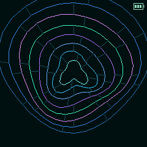
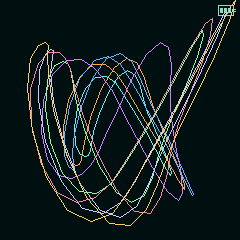
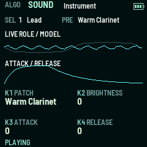
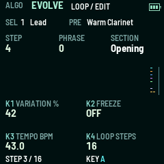
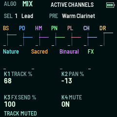
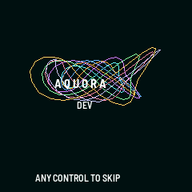

01 / LIVING MUSIC
Music that keeps becoming.
Intention-aware generative patterns, chords, melodies and musical variation bring a sense of movement to long listening sessions.
A living generative instrument for the M-VAVE FM-1. Evolving melodies, luminous water-inspired visuals, immersive soundscapes and deeply playable controls — always changing, always yours.

Eight musical roles form an evolving arrangement. Fine-tune your patch, rhythm, soundscape and frequency without leaving the creative flow.
Intention-aware generative patterns, chords, melodies and musical variation bring a sense of movement to long listening sessions.
Explore intention-linked reference tones, musical tunings and stereo binaural beats with separate left/right signals. Headphones recommended for binaural listening.
Blend evolving synthesized nature beds with instruments, gentle ambient drums and spacious effects. Control each layer on the device.
A playable keyboard, musical scale-aware controls, evolving phrases and a practical mixer make hands-on exploration part of the composition.
Original and Polar Bloom transform audio and musical activity into color, geometry and flowing light on the FM-1 display.
Live parameter editing, save banks, lighting modes, sound categories and an experimental AIR signal interface expand the instrument beyond presets.
AQUORA is a creative listening and musical instrument, not a medical treatment. Intention and frequency names are artistic listening themes, not claims of established healing effects. AIR sensing is experimental and physical response varies.
These are genuine 240 × 240 software-rendered interface captures from the completed 0.6.1 validation, not concept art. Select a frame to view the original.





AQUORA is an independent creative work built around musical curiosity, movement, and the beauty of patterns in nature.
Ripples, symmetry, interference and crystalline motifs inform the visual language. Masaru Emoto's imagery is a *visual inspiration*, not scientific evidence of water remembering emotion.
THEMES / WAVEFORMS / LIGHTSlow drones, layered acoustic colors, evolving melodic fragments and generative arrangement techniques shape the sonic identity.
THEMES / STILLNESS / MOVEMENTFM-1 creator projects like HYP-1 and ChoralRoot inspire future UX and typography studies. AQUORA retains its own artwork and interface.
INDEPENDENT DESIGN / SHARED CREATIVE SPIRITNot a video, not a static mockup. The emulator runs the completed AQUORA 0.6.1 FM-1 application compiled to WebAssembly, with live audio and the virtual instrument's knobs, buttons, keys and display.
Audio starts only after you select “Switch on” inside the emulator. Use headphones for stereo binaural listening.
Tap “Switch on” in the embedded emulator, then press PLAY on its virtual panel. For the most room to perform, open the dedicated emulator page.
Explore first, then use the verified installer when you're ready to move to hardware. Historical releases stay available for rollback.
Live firmware presented here: v0.6.1. Development work on 0.6.2 is separate and is not advertised as released.